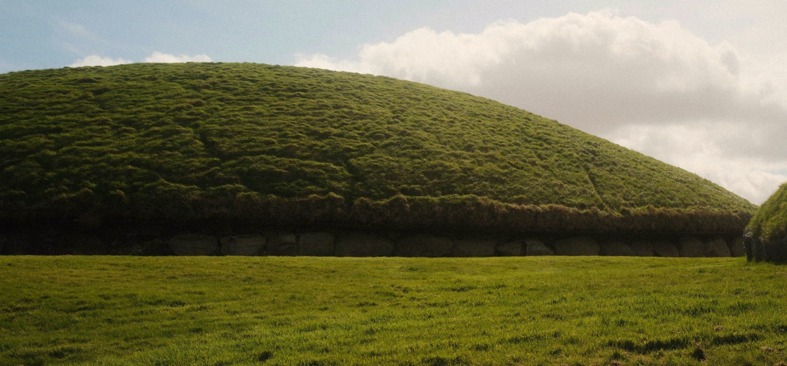
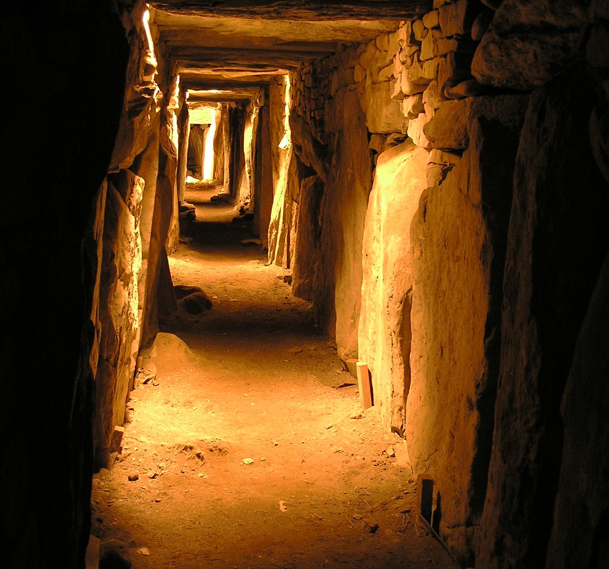

KNOWTH

The Great Mound
The 5000 year old main mound at Knowth, known as Knowth Site 1, is contemporary with the mounds at Newgrange and Dowth. The site consists of a large mound and 18 smaller satellite mounds. The large mound contains two passages, placed along an east-west line, each leading to a burial chamber.
Megalithic Art
The entire mound is encircled by 127 kerbstones, many of which are decorated with megalithic art. Over 200 decorated stones were found during excavations at Knowth, and the site contains a remarkable concentration of Neolithic art, including spirals, lozenges, concentric circles, and crescent shapes.
